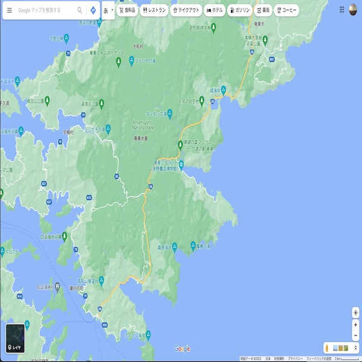

BEACH(ビーチ検索）

開発環境
Ruby / Ruby on Rails / MySQL / GitHub / Heroku / Visual Studio Code / Trello
-
概要
制作時間 100時間 URL https://beach-rails.herokuapp.com -
動作テスト
テスト用アカウント
mail test_user@test.com PASS 2wsx3edc
OUTLINEアプリケーションの概要
オリジナルアプリケーションとして、沖縄のビーチを検索できるアプリを開発しました。
主な機能は、ユーザー登録機能、およびカテゴリー毎のビーチ検索機能です。
ログインすると、ヘッダーに「サーチ」アイコンが表示されています。それをクリックすると、ビーチ情報が載っている検索ページを閲覧することができます。
ビーチ検索は、ビーチ名での検索からチェックボックスによるアクティビティ、設備カテゴリー毎の検索をすることが可能で、掲載されているビーチの画像または、名称をクリックすることでビーチの詳細情報が載っているページへと画面遷移します。
-
開発に至った経緯
ビーチの楽しみ方は人それぞれなのにそれらをまとめて用途毎に検索できるサイトがなく課題を感じることがありました。
私は、趣味でシュノーケリングや焚き火をしますが、焚き火の可否情報が載っているサイトは少なくまた、シュノーケリングをしたいと思っていても焚き火情報が載っているサイトにシュノーケリングの可否情報が載っているとなるとより少なくなります。更に今は子供が新しく産まれたので子供が遊べるかつ焚き火ができるといった検索が可能なサイトが必要だと感じました。
そこで、YAMAPのような山の情報共有サイトを参考に用途にあったカテゴリー毎にビーチ検索を作成したいと考えました。
-
開発で工夫したこと

1つ目が本アプリケーションのポイントであるアクティビティー、設備毎のカテゴライズ機能です。カテゴリー管理にはcollection_check_boxesメソッドとform_objectを使用して、チェックボックス式の複数カテゴリーをビーチ毎に管理できるようにしました。
2つ目がカテゴリー検索です。カテゴリー検索には、ransackというRubyGemを用い、チェックボックス式でカテゴリー毎に検索ができるようにしました。
-
今後実装したいと思っていること
GoogleMapAPIを用いて、ビーチ毎に位置情報を設けたいと考えています。理由は2つあります。
1つ目が、ユーザーがGoogleMapを利用して旅行や場所を検索する機会が多いためです。
2つ目が、ユーザが簡略的に場所を認識できるように具体的な地図情報を連携しておくほうが利便性が高いと考えるためです。
そこで、ビーチの詳細情報の中にGoogleMapによる地図情報を組み込もうと考えています。
OTHERSその他実績
-
FURIMA（フリマアプリ）
Ruby / Ruby on Rails / MySQL / GitHub / Heroku / Visual Studio Code / Trello